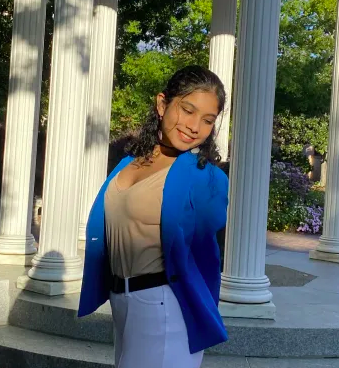

About

Hello! I'm Hrishika, a graduate student pursuing an M.S. in Information Science at UNC Chapel Hill, continuing from my B.S. in Information Science and Neuroscience with a minor in Computer Science through the SILS BS-MS Dual Pathway.
My work lives at the intersection of human computer interaction, neural networks, and human centered design. I care about building tools that are accessible, trustworthy, and actually want to be used. Recent projects include eye tracking in AI assisted academic search, model card evaluation for brain computer interfaces, and a systematic review on how large language models are shifting human communication.
I've always loved science because it answers the questions I asked as a kid, how birds fly, how plants grow, how people get sick, how animals communicate. That curiosity eventually pulled me toward the systems people use to find, interpret, and share what they know.
I'm deeply invested in STEM education and access. Teaching has shaped how I do every other thing, from research to design. As the oldest in my family, I spent my childhood explaining things at the kitchen table, and I've carried that into co founding Girls Who Code chapters, tutoring chemistry through SMath Tutors, and facilitating Python at UNC's GWC chapter. Information is only powerful when it's accessible, and the first step to activism is education.
Outside STEM I'm passionate about music, theatre, and dance. I've trained in Bharatanatyam for over a decade, compete in Shakespeare and Speech and Debate, and can usually be found writing lyrics or tapping my feet to whatever happens to be playing.
I've been doing research for close to a decade, presenting work on biotechnology, nanotechnology, and human computer interaction at ISEF, AJAS, BioGENEius, and the NC International Science Challenge. As co founder of SkyeLabs Innovation Inc. I helped develop EcoGel, a sustainable biopolymer aerogel that won the Pete Conrad Scholar award and earned a NASA iTech Top 10 Finalist spot with the sole Honorable Mention as the youngest team ever recognized.
On campus I serve as a SILS Ambassador and Student Advisory Board member, Co President of UNC Zero Degrees, and College Loop President of UNC Girls Who Code. I previously served as Editor in Chief of the Broad Street Scientific, NCSSM's official journal of student STEM research.